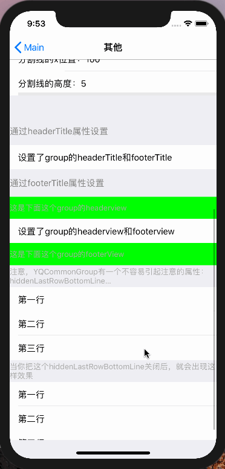

前言
由于写了太多次的设置界面、个人中心界面等，已经写到麻木。渐渐意识到，或许可以把这些类似的TableViewCell封装成一种，通过简单的方法去创建以及使用，这样就可以大大减少劳动力啦。
在这篇文章之前，我已经写了一篇介绍YQCommonCell的文章，但是因为更新的次数过多内容杂乱，我决定重新写一篇。
项目中的使用效果
很荣幸，在公司的项目中，已经使用了这个框架。的确，在开发表单视图上节约了大量时间。下面是两个项目中的效果图：
内部结构
其实这个项目的思路很容易理解，我将UITableView的数据源抽离成模型，cell对应YQCommonItem，section对应YQCommonGroup。在YQCommonCell类有@property (nonatomic, strong) YQCommonItem *item;属性。在-(void)setItem:(YQCommonItem *)item方法中进行属性设置，在- (void)layoutSubviews中布局界面。
能做的
这个框架几乎能解决所有的表单视图绘制。
YQCommonItem的属性
cell自身相关属性介绍
1 | // cell 对应属性 |
icon 和提醒红点相关属性介绍
1 | // icon 对应属性 |
效果：

title相关属性介绍
1 | // title 对应属性 |
效果：
assistLabel相关属性介绍
1 | // 辅助视图assistLabel 对应属性 NSAttributedString > NSString |
效果：
assistField相关属性展示
1 | // 辅助视图textField 对应属性 |
效果：
assistView相关属性展示
1 | // 辅助视图自定义customview 对应属性 |
assistView相关的属性较少，但是这个属性却解决了绝大多数的复杂界面的绘制。
效果：
其他属性展示
1 | // 分割线 对应属性 |
YQCommonGroup的属性
1 | YQPropStatementAndFuncStatement(strong, YQCommonGroup, NSArray *, items) |
正如上文所说，YQCommonGroup对应的是tableview的Section，因此它的属性都与Section相关。
其中需要注意的是hiddenLastRowBottomLine属性，默认开启，会隐藏每个Section最后一行cell的分割线。
效果：

如何使用
1 | @interface MainViewController () <UITableViewDelegate, UITableViewDataSource> |
以demo中的MainViewContoller为例，tableview的数据源与代理方法我都用宏写入YQCommonMacro中。设置cell的属性全在- (void)setData方法中实现。
效果:
至于其他效果的实现，可下载demo了解。